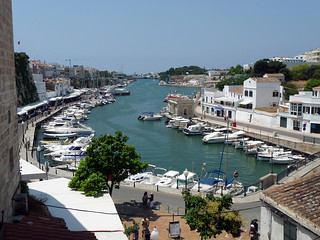
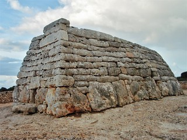
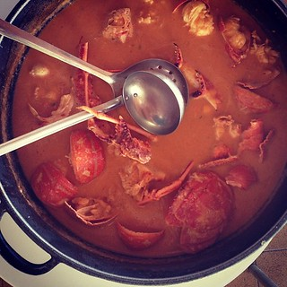
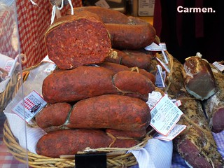
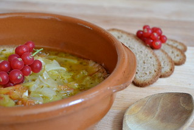

Menorca
Algemene info
Op haar beurt is Menorca het tweede grootste eiland van de Balearen.
Volgens eilandeninfo telt Menorca 92434 inwoners. De oppervlakte van dit eiland bedraagt 694.1 km2.
In Menorca zijn er ongeveer 133 inwoners per km2.
Menorca heeft slechts 1 luchthaven, 'Aeropuerto de Menorca', maar beschikt ook over 2 havens, 'Puerto de Maó', dat in het oosten ligt, en 'Puerto de Ciutadella', in het westen van het eiland. De luchthaven is hier veel kleiner, maar je kunt van hieruit naar verschillende Europese landen vliegen, zoals Italië of Ierland.
Toeristische plekken
Ciutadella:

Ciutadella is de grootste toeristische attractie van Menorca. Het is de meest bevolkte stad van Menorca, en de op een na grootste stad na Mahón.
Er wordt gezegd dat Ciutadella de stad is waar de eerste kolonisten zich vestigden.
Ciutadella is eigenlijk een mengeling van toeristische bezienswaardigheden. In deze stad vind je onder andere de Kathedraal van Menorca en zoals eerder vermeld de haven, die wordt beschouwd als de mooiste en rustigste van Menorca.
Naveta des Tudons:

De Naveta des Tudons is de Spaanse variant van de piramides uit Egypte. Naveta betekent 'schip' in het 'Menorquí'.
Ze werden gebruikt als zowel woonplek als graf. Dit laatste werd opgemerkt doordat er menselijke resten werden gevonden naast een van deze grafkamers.
Typische gerechten
| Caldereta de Langosta |
Sobrasada |
Oliaigua |
|  |
 |
 |